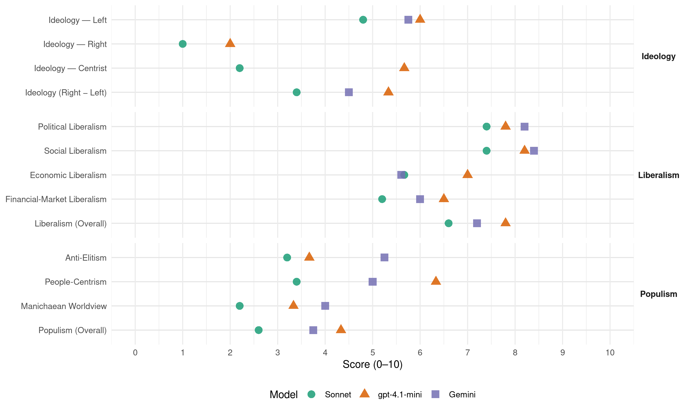

SD (Slovenia, 2008)
manifesto_id 97322_200809
Get full text: This site shows derived annotations and short verbatim quotes only. The full manifesto text is © Manifesto Project / WZB — obtain it via manifesto-project.wzb.eu using the manifesto_id above.
Headline scores
| Dimension | Sonnet | gpt-4.1-mini | Gemini |
|---|---|---|---|
| Populism (Overall) | 2.6 | 4.3 | 3.8 |
| Anti-Elitism | 3.2 | 3.7 | 5.2 |
| People-Centrism | 3.4 | 6.3 | 5.0 |
| Manichaean Worldview | 2.2 | 3.3 | 4.0 |
| Ideology (Right − Left) | 3.4 | 5.3 | 4.5 |
| Liberalism (Overall) | 6.6 | 7.8 | 7.2 |
| Political Liberalism | 7.4 | 7.8 | 8.2 |
| Social Liberalism | 7.4 | 8.2 | 8.4 |
| Economic Liberalism | 5.7 | 7.0 | 5.6 |
| Financial-Market Liberalism | 5.2 | 6.5 | 6.0 |
Evidence per dimension
Economic Liberalism
Gemini · score 7.0 · verified · chunk 1
“postopen in transparenten umik države iz”
takšnih ciljev je nujen postopen in transparenten umik države iz vseh podjetij, ki so v procesu preoblikovanja
Gemini · score 6.0 · verified · chunk 2
“Spodbujali bomo konkurenčnost na trgu s ciljem zagotoviti najboljše storitve”
samopostrežne elektronske storitve« (na primer naročanje pri zdravniku in spremljanje čakalnih vrst). Spodbujali bomo konkurenčnost na trgu s ciljem zagotoviti najboljše storitve po najbolj ugodnih cenah
Gemini · score 4.0 · verified · chunk 3
“visokega šolstva ne more voditi nevidna roka trga”
razvijalo strokovno, ampak predvsem stihijsko. Univerza ni tovarna in visokega šolstva ne more voditi »nevidna roka« trga; vsaj v kakovost ne. Zavzemamo se
Gemini · score 5.0 · verified · chunk 4
“regulacijo najemnih razmerij na tržnem”
pri čemer javni sektor poskrbi za regulacijo najemnih razmerij na tržnem segmentu, za ugodno kreditirana in cenovno
Gemini · score 6.0 · verified · chunk 5
“zasebnem varovanju za gospodarsko dejavnost in”
zasebno varovanje z obveznim članstvom, ni bila slaba, čeprav gre pri zasebnem varovanju za gospodarsko dejavnost in naj bi se država s tem
gpt-4.1-mini · score 7.0 · verified · chunk 1
“zagotavljali bomo konkurenco, kjerkoli bo to možno”
Vzpostaviti je treba stabilen sistem regulacije in ustrezen pravni sistem in ob tem čim bolj sprostiti podjetniške pobude. Država bo pri tem pomagala s posredno gospodarsko politiko. Zagotavljali bomo konkurenco, kjerkoli bo to možno…
gpt-4.1-mini · score 7.0 · verified · chunk 2
“podpirali bomo podjetništvo, ki bo zainteresirano za vlaganja v okoljske tehnologije”
Za dosego tega je treba jasno zastaviti nacionalne cilje ter povečati investiranje v človeške vire in raziskovalno-razvojne dejavnosti. Podpreti je treba podjetništvo, ki bo zainteresirano za vlaganja v okoljske tehnologije.
gpt-4.1-mini · score 7.0 · verified · chunk 3
“kulturne industrije osnova za t. i. urbano prenovo mest”
K izvedbi teh projektov bomo pritegnili tako zasebni sektor kot tudi zainteresirane lokalne skupnosti, saj so kulturne industrije osnova za t. i. urbano prenovo mest.
gpt-4.1-mini · score 7.0 · verified · chunk 4
“zagotovili bomo pogoje za enak in kvaliteten dostop do izobraževanja”
…Prihodnost Slovenije vidimo v razmišljajoči in učeči se družbi, ki mora zagotoviti možnosti za enak in kvaliteten dostop do izobraževanja, ki vsakemu posamezniku in posameznici omogoči realizacijo vseh potencialov.
gpt-4.1-mini · score 7.0 · verified · chunk 5
“spodbujali k razvoju domačo obrambno industrijo”
V okviru tega bomo racionalno in varčno kupovali novo opremo, spodbujali k razvoju domačo obrambno industrijo, pri nabavah iz tujine pa bomo dosledno upoštevali preglednost in čim večjo neposrednost postopkov nabave ter izključili posrednike.
Sonnet · score 6.0 · verified · chunk 1
“Konkurenčno gospodarstvo zahteva manj vmešavanja države”
1.2 Konkurenčno gospodarstvo zahteva manj vmešavanja države in bolj neodvisno delovanje nadzornih institucij
Sonnet · score 6.0 · mixed · chunk 2
“konkurenčnost na trgu s ciljem zagotoviti najboljše storitve”
Spodbujali bomo konkurenčnost na trgu s ciljem zagotoviti najboljše storitve po najbolj ugodnih cenah za slovenske uporabnike
Sonnet · score 5.0 · mixed · chunk 3
“Univerza ni tovarna in visokega šolstva ne more voditi »nevidna roka« trga”
Univerza ni tovarna in visokega šolstva ne more voditi »nevidna roka« trga; vsaj v kakovost ne. Zavzemamo se za načelo partnerskega sodelovanja
Sonnet · score 5.0 · verified · chunk 4
“pritegnitev zasebnega kapitala skozi oblike javno-zasebnih partnerstev”
Drugi cilj pa je pritegnitev zasebnega kapitala skozi oblike javno-zasebnih partnerstev v zagotavljanje tržno dostopnih oziroma tržnih najemnih in neprofitnih stanovanj
Sonnet · score 6.0 · verified · chunk 5
“spodbujali k razvoju domačo obrambno industrijo”
bomo racionalno in varčno kupovali novo opremo, spodbujali k razvoju domačo obrambno industrijo, pri nabavah iz tujine pa bomo dosledno upoštevali preglednost
Financial-Market Liberalism
Gemini · score 7.0 · verified · chunk 1
“enotne agencije za nadzor in regulacijo finančnega”
Banka Slovenije, bodo omogočale profesionalno opravljanje svojih funkcij. Predlagali bomo ustanovitev enotne agencije za nadzor in regulacijo finančnega sistema v okviru Banke Slovenije.
Gemini · score 6.0 · verified · chunk 2
“Trajnostno gospodarstvo mora biti podprto z ustrezno finančno politiko”
javni sektor mora dajati zgled trajnostne naravnanosti z »zelenimi« javnimi naročili. Trajnostno gospodarstvo mora biti podprto z ustrezno finančno politiko, ki poleg dobička upošteva tudi majhno porabo
Gemini · score 5.0 · verified · chunk 5
“davki, trg vrednostnih papirjev, pranje denarja”
sodelovanje omenjenih institucij bo razvidno na področjih, kot so davki, trg vrednostnih papirjev, pranje denarja, javna naročila, državna revizija.
gpt-4.1-mini · score 7.0 · verified · chunk 1
“ustanovitev enotne agencije za nadzor in regulacijo finančnega sistema v okviru Banke Slovenije”
Predlagali bomo ustanovitev enotne agencije za nadzor in regulacijo finančnega sistema v okviru Banke Slovenije. Poleg tega pa se mora varstvo potrošnikov na trgu namesto številnih razdrobljenih in nepovezanih inšpekcijskih služb…
gpt-4.1-mini · score 6.0 · verified · chunk 4
“preučili bomo možnosti za ustanovitev posebne finančne policije”
…Preučili bomo možnosti za ustanovitev posebne finančne policije oziroma za okrepitev kriminalistične policije in boljšo koordinacijo med policijo in ostalimi organi, ki naj bo sposobna odkrivati in preganjati kazniva dejanja gospodarskega kriminala.
Sonnet · score 6.0 · verified · chunk 1
“nadzor finančnega sistema, varstvo konkurence”
Uresničili bomo prenos nekaterih nadzornih funkcij države (nadzor finančnega sistema, varstvo konkurence in potrošnikov) na neodvisne nadzorne institucije.
Sonnet · score 6.0 · verified · chunk 2
“Zasebni kapital bomo okrepili v proizvodnji in prodaji električne energije”
Zasebni kapital bomo okrepili v proizvodnji in prodaji električne energije, a šele po smiselni ureditvi tega področja in tam, kjer ne bo monopolov
Sonnet · score 5.0 · verified · chunk 3
“davčnih olajšav ter spodbujali nastanek zasebnih filmskih skladov”
Prizadevali si bomo za spodbujanje dodatnega priliva sredstev v sektor s pomočjo davčnih olajšav ter spodbujali nastanek zasebnih filmskih skladov.
Sonnet · score 4.0 · verified · chunk 4
“trg vrednostnih papirjev, pranje denarja”
Strokovno povezovanje in sodelovanje omenjenih institucij bo razvidno na področjih, kot so davki, trg vrednostnih papirjev, pranje denarja, javna naročila
Sonnet · score 5.0 · verified · chunk 5
“trg vrednostnih papirjev, pranje denarja”
Strokovno povezovanje in sodelovanje omenjenih institucij bo razvidno na področjih, kot so davki, trg vrednostnih papirjev, pranje denarja, javna naročila
Political Liberalism
Gemini · score 9.0 · verified · chunk 1
“dejansko delitev oblasti na zakonodajno, izvršilno”
za delovanje parlamentarne demokracije, za dejansko delitev oblasti na zakonodajno, izvršilno in sodno ter ustvarili ustrezno ravnovesje
Gemini · score 8.0 · verified · chunk 2
“državo, ki temelji na participativni demokraciji, spoštovanju človekovih pravic”
Z izobraževanjem ustvarjalnih posameznikov in učinkovito državo, ki temelji na participativni demokraciji, spoštovanju človekovih pravic ter ohranjanju narave
Gemini · score 8.0 · verified · chunk 3
“zakon bo tudi utrdil avtonomijo univerz”
povečal mednarodno sodelovanje in vzpostavil trdno strukturo med posameznimi tipi visokošolskih ustanov. Zakon bo tudi utrdil avtonomijo univerz, podpiral dvig kakovosti študija
Gemini · score 8.0 · verified · chunk 4
“uveljavitev sodstva kot tretje veje”
za dosledno uresničitev načel pravne države. in za uveljavitev sodstva kot tretje veje oblasti v sistemu delitve oblasti
Gemini · score 8.0 · verified · chunk 5
“okrepiti parlamentarni nadzor nad varnostnimi in obveščevalnimi”
Prav tako je nujno potrebno okrepiti parlamentarni nadzor nad varnostnimi in obveščevalnimi službami, in sicer v smislu strokovno-tehničnega
gpt-4.1-mini · score 8.0 · verified · chunk 1
“človekove pravice, demokracija in pravna država temeljne civilizacijske vrednote”
Za Socialne demokrate so človekove pravice, demokracija in pravna država temeljne civilizacijske vrednote. Zato bomo za dvig standardov njihovega spoštovanja, utrjevanja in varovanja pripravili ustrezne spremembe zakonodaje…
gpt-4.1-mini · score 7.0 · verified · chunk 2
“učinkovito državo, ki temelji na participativni demokraciji, spoštovanju človekovih pravic”
Z izobraževanjem ustvarjalnih posameznikov in učinkovito državo, ki temelji na participativni demokraciji, spoštovanju človekovih pravic ter ohranjanju narave in okolja, bo dejavno varovanje krajine in ekosistemov postalo način življenja.
gpt-4.1-mini · score 8.0 · verified · chunk 3
“enake možnosti za vse prebivalce, univerzalnost in enako dostopnost vseh”
Zagovarjamo naslednje vrednote javnega zdravstvenega varstva: enake možnosti za vse prebivalce, univerzalnost in enako dostopnost vseh do potrebnih zdravstvenih storitev ter solidarno zagotavljanje sredstev.
gpt-4.1-mini · score 8.0 · verified · chunk 4
“zagotoviti, da bo vsako ministrstvo pripravilo in javnosti predstavilo tudi ta vidik javne porabe”
…V prihodnje bo vlada v sodelovanju z Uradom za enake možnosti RS, nevladnimi organizacijami in sindikati poskrbela, da bo vsako ministrstvo pripravilo in javnosti predstavilo tudi ta vidik javne porabe.
gpt-4.1-mini · score 8.0 · verified · chunk 5
“okrepiti parlamentarni nadzor nad varnostnimi in obveščevalnimi službami”
Prav tako je nujno potrebno okrepiti parlamentarni nadzor nad varnostnimi in obveščevalnimi službami, in sicer v smislu strokovno-tehničnega servisa, ki bi deloval kot pomoč parlamentarni Komisiji za zahtevnejša nadzorstvena opravila.
Sonnet · score 8.0 · verified · chunk 1
“človekove pravice, demokracija in pravna država”
Za Socialne demokrate so človekove pravice, demokracija in pravna država temeljne civilizacijske vrednote. Zato bomo za dvig standardov njihovega spoštovanja, utrjevanja in varovanja pripravili ustrezne spremembe zakonodaje
Sonnet · score 7.0 · verified · chunk 2
“participativni demokraciji, spoštovanju človekovih pravic”
z izobraževanjem ustvarjalnih posameznikov in učinkovito državo, ki temelji na participativni demokraciji, spoštovanju človekovih pravic ter ohranjanju narave in okolja
Sonnet · score 6.0 · verified · chunk 3
“avtonomijo univerz”
Zakon bo tudi utrdil avtonomijo univerz, podpiral dvig kakovosti študija, povečal mednarodno sodelovanje
Sonnet · score 8.0 · verified · chunk 4
“dosledno uresničitev načel pravne države”
Socialni demokrati se zato zavzemamo za dosledno uresničitev načel pravne države. in za uveljavitev sodstva kot tretje veje oblasti v sistemu delitve oblasti
Sonnet · score 8.0 · verified · chunk 5
“okrepiti parlamentarni nadzor nad varnostnimi in obveščevalnimi službami”
Prav tako je nujno potrebno okrepiti parlamentarni nadzor nad varnostnimi in obveščevalnimi službami, in sicer v smislu strokovno-tehničnega servisa
Liberalism (Overall)
Gemini · score 8.0 · verified · chunk 1
“dejansko delitev oblasti na zakonodajno, izvršilno”
za delovanje parlamentarne demokracije, za dejansko delitev oblasti na zakonodajno, izvršilno in sodno ter ustvarili ustrezno ravnovesje
Gemini · score 7.0 · verified · chunk 2
“državo, ki temelji na participativni demokraciji, spoštovanju človekovih pravic”
Z izobraževanjem ustvarjalnih posameznikov in učinkovito državo, ki temelji na participativni demokraciji, spoštovanju človekovih pravic ter ohranjanju narave
Gemini · score 7.0 · verified · chunk 3
“zakon bo tudi utrdil avtonomijo univerz”
povečal mednarodno sodelovanje in vzpostavil trdno strukturo med posameznimi tipi visokošolskih ustanov. Zakon bo tudi utrdil avtonomijo univerz, podpiral dvig kakovosti študija
Gemini · score 7.0 · verified · chunk 4
“uveljavitev sodstva kot tretje veje”
za dosledno uresničitev načel pravne države. in za uveljavitev sodstva kot tretje veje oblasti v sistemu delitve oblasti
Gemini · score 7.0 · verified · chunk 5
“okrepiti parlamentarni nadzor nad varnostnimi in obveščevalnimi”
Prav tako je nujno potrebno okrepiti parlamentarni nadzor nad varnostnimi in obveščevalnimi službami, in sicer v smislu strokovno-tehničnega
gpt-4.1-mini · score 8.0 · verified · chunk 1
“človekove pravice, demokracija in pravna država temeljne civilizacijske vrednote”
Za Socialne demokrate so človekove pravice, demokracija in pravna država temeljne civilizacijske vrednote. Zato bomo za dvig standardov njihovega spoštovanja, utrjevanja in varovanja pripravili ustrezne spremembe zakonodaje…
gpt-4.1-mini · score 7.0 · verified · chunk 2
“učinkovito državo, ki temelji na participativni demokraciji, spoštovanju človekovih pravic”
Z izobraževanjem ustvarjalnih posameznikov in učinkovito državo, ki temelji na participativni demokraciji, spoštovanju človekovih pravic ter ohranjanju narave in okolja, bo dejavno varovanje krajine in ekosistemov postalo način življenja.
gpt-4.1-mini · score 8.0 · verified · chunk 3
“enake možnosti za vse prebivalce, univerzalnost in enako dostopnost vseh”
Zagovarjamo naslednje vrednote javnega zdravstvenega varstva: enake možnosti za vse prebivalce, univerzalnost in enako dostopnost vseh do potrebnih zdravstvenih storitev ter solidarno zagotavljanje sredstev.
gpt-4.1-mini · score 8.0 · verified · chunk 4
“zagotovili bomo pogoje za enak in kvaliteten dostop do izobraževanja”
…Prihodnost Slovenije vidimo v razmišljajoči in učeči se družbi, ki mora zagotoviti možnosti za enak in kvaliteten dostop do izobraževanja, ki vsakemu posamezniku in posameznici omogoči realizacijo vseh potencialov.
gpt-4.1-mini · score 8.0 · verified · chunk 5
“okrepiti parlamentarni nadzor nad varnostnimi in obveščevalnimi službami”
Prav tako je nujno potrebno okrepiti parlamentarni nadzor nad varnostnimi in obveščevalnimi službami, in sicer v smislu strokovno-tehničnega servisa, ki bi deloval kot pomoč parlamentarni Komisiji za zahtevnejša nadzorstvena opravila.
Sonnet · score 7.0 · verified · chunk 1
“človekove pravice, demokracija in pravna država”
Za Socialne demokrate so človekove pravice, demokracija in pravna država temeljne civilizacijske vrednote. Zato bomo za dvig standardov njihovega spoštovanja, utrjevanja in varovanja pripravili ustrezne spremembe zakonodaje
Sonnet · score 7.0 · verified · chunk 2
“participativni demokraciji, spoštovanju človekovih pravic”
z izobraževanjem ustvarjalnih posameznikov in učinkovito državo, ki temelji na participativni demokraciji, spoštovanju človekovih pravic ter ohranjanju narave in okolja
Sonnet · score 6.0 · verified · chunk 3
“načelo enakih možnosti”
Razvijali bomo socialno partnerstvo in uveljavljali načelo enakih možnosti, pripravili aktivnosti za izboljšanje dostopa žensk in socialno izključenih skupin
Sonnet · score 6.0 · verified · chunk 4
“dosledno uresničitev načel pravne države”
Socialni demokrati se zato zavzemamo za dosledno uresničitev načel pravne države. in za uveljavitev sodstva kot tretje veje oblasti
Sonnet · score 7.0 · verified · chunk 5
“okrepiti parlamentarni nadzor nad varnostnimi in obveščevalnimi službami”
Prav tako je nujno potrebno okrepiti parlamentarni nadzor nad varnostnimi in obveščevalnimi službami, in sicer v smislu strokovno-tehničnega servisa
Anti-Elitism
Gemini · score 5.0 · verified · chunk 1
“koncentraciji bogastva v rokah maloštevilne elite”
vse večjem razslojevanju v družbi in vse večji koncentraciji bogastva v rokah maloštevilne elite, v nerazvitih okoljih pa so depriviligirane
Gemini · score 5.0 · verified · chunk 2
“odpraviti dosedanjo prakso vlade, ki preko različnih vzvodov politike obvladuje znanost”
V znanstveno-raziskovalni dejavnosti je treba odpraviti dosedanjo prakso vlade, ki preko različnih vzvodov politike obvladuje znanost, ter doseči avtonomijo
Gemini · score 6.0 · verified · chunk 4
“politične samovolje vladajoče elite”
Mediji ne morejo in ne smejo biti poligon politične samovolje vladajoče elite ali pomagalo interesom kapitala.
Gemini · score 5.0 · verified · chunk 5
“Namesto politično »reklamne« kampanje boja zoper »tajkune«”
7.2 Gospodarski kriminal Namesto politično »reklamne« kampanje boja zoper »tajkune« sedanje vlade, ki istočasno ukinja protikorupcijsko
gpt-4.1-mini · score 5.0 · verified · chunk 1
“vse večja koncentracija bogastva v rokah maloštevilne elite”
…razslojevanju v družbi in vse večja koncentracija bogastva v rokah maloštevilne elite, v nerazvitih okoljih pa so depriviligirane sloje spravile v revščino…
gpt-4.1-mini · score 3.0 · verified · chunk 4
“vladajoča koalicija samovoljno imenuje strankarske simpatizerje”
…programski svet RTV Slovenija, še zlasti sistem upravljanja, kjer mora programski svet vnovič dobiti osrednjo vlogo pri določanju programske in poslovne politike zavoda. Namesto sedanje farsične »civilnodružbene« sestave, kamor vladajoča koalicija samovoljno imenuje strankarske simpatizerje kot svoj glasovalni stroj, mora imeti novi programski svet RTV Slovenija uravnoteženo, tripartitno sestavo.
gpt-4.1-mini · score 3.0 · verified · chunk 5
“boj zoper gospodarski kriminal in korupcijo”
Namesto politično »reklamne« kampanje boja zoper »tajkune« sedanje vlade, ki istočasno ukinja protikorupcijsko komisijo in s tem jasno kaže, da je boj zoper gospodarski kriminal in korupcijo v resnici zanima zgolj kot »volilna« tema, je treba postaviti stabilnejši okvir za delovanje policije na tem področju.
Sonnet · score 4.0 · verified · chunk 1
“koncentraciji bogastva v rokah maloštevilne elite”
vse večjem razslojevanju v družbi in vse večji koncentraciji bogastva v rokah maloštevilne elite, v nerazvitih okoljih pa so depriviligirane sloje spravile v revščino
Sonnet · score 2.0 · verified · chunk 2
“prakso vlade, ki preko različnih vzvodov politike obvladuje znanost”
V znanstveno-raziskovalni dejavnosti je treba odpraviti dosedanjo prakso vlade, ki preko različnih vzvodov politike obvladuje znanost, ter doseči avtonomijo upravljanja
Sonnet · score 3.0 · verified · chunk 3
“divja privatizacija”
bolj ali manj neprikritimi načini pristranskega podpiranja komercializacije in privatizacije (»divja privatizacija«) je ustvarila velik psihološki pritisk na izvajalce
Sonnet · score 4.0 · verified · chunk 4
“vladajoča koalicija samovoljno imenuje strankarske simpatizerje”
kamor vladajoča koalicija samovoljno imenuje strankarske simpatizerje kot svoj glasovalni stroj, mora imeti novi programski svet RTV Slovenija uravnoteženo
Sonnet · score 3.0 · verified · chunk 5
“politično »reklamne« kampanje boja zoper »tajkune«”
Namesto politično »reklamne« kampanje boja zoper »tajkune« sedanje vlade, ki istočasno ukinja protikorupcijsko komisijo
Ideology — Centrist
gpt-4.1-mini · score 6.0 · verified · chunk 1
“novo dogovor, novo vizijo razvoja, ki bo vsakomur zagotavljala možnost in priložnost za dostojno življenje”
Ta program je odgovor na izziv časa, v katerega vstopamo, in povabilo vsem, ki si želijo boljšo Slovenijo, da bi v prihodnosti skupaj stopili na novo pot. Slovenija po našem mnenju potrebuje nov dogovor, novo vizijo razvoja, ki bo vsakomur zagotavljala možnost in priložnost za dostojno življenje…
gpt-4.1-mini · score 5.0 · verified · chunk 4
“Socialni demokrati smo zavezani demokratičnim procesom in demokraciji na vseh ravneh upravljanja”
…Socialni demokrati smo zavezani demokratičnim procesom in demokraciji na vseh ravneh upravljanja javnih zadev. Širitev in poglabljanje demokratičnih procesov za nas nikoli ni končano opravilo.
gpt-4.1-mini · score 6.0 · verified · chunk 5
“Potrebujemo tako učinkovito policijo kot tudi neodvisno protikorupcijsko komisijo”
Debata o tem, kdo naj preganja korupcijo, policija ali posebna, neodvisna komisija, je povsem zgrešena. Potrebujemo tako učinkovito policijo kot tudi neodvisno protikorupcijsko komisijo.
Sonnet · score 2.0 · verified · chunk 1
“ravnovesje med tekmovalnostjo in solidarnostjo”
iskali ravnovesje med tekmovalnostjo in solidarnostjo. Socialni demokrati smo prepričani, da lahko Slovenija svojo pot med najbolj razvite države sveta opravi hitreje
Sonnet · score 2.0 · verified · chunk 2
“Socialnodemokratska politika torej predstavlja program”
Socialnodemokratska politika torej predstavlja program, ki več spodbud in sredstev namenja vsem živečim na podeželju: kmetom, polkmetom in drugim prebivalcem
Sonnet · score 2.0 · verified · chunk 3
“vsi ljudje enake možnosti”
Pri vprašanjih zdravja morajo imeti vsi ljudje enake možnosti.
Sonnet · score 3.0 · verified · chunk 4
“poglabljanje demokratizacije, približevanje odločanja ljudem”
Kot ključni cilj vsakega urejanja družbenega življenja vidimo poglabljanje demokratizacije, približevanje odločanja ljudem in decentralizacijo v vseh pogledih.
Sonnet · score 2.0 · verified · chunk 5
“oblikovanje nacionalnega soglasja”
bomo pri oblikovanju bistvenejših zunanjepolitičnih in varnostnih odločitev stremeli k oblikovanju nacionalnega soglasja
Ideology — Left
Gemini · score 6.0 · verified · chunk 1
“odpraviti ali vsaj ublažiti posledice razslojevanja”
kako ohraniti življenje v naravnem okolju in odpraviti ali vsaj ublažiti posledice razslojevanja v družbi in obenem ohraniti zagon pri
Gemini · score 6.0 · verified · chunk 2
“Socialnodemokratska politika torej predstavlja program, ki več spodbud in sredstev namenja vsem”
polovica državljank in državljanov živi na podeželju, zato smo program oblikovali tako za kmete kot za urbane prebivalce, ki živijo na podeželju. Socialnodemokratska politika torej predstavlja program, ki več spodbud in sredstev namenja vsem živečim na podeželju
Gemini · score 6.0 · verified · chunk 4
“preprečevanje protipravnega bogatenja”
eden izmed ciljev sodstva tudi preprečevanje protipravnega bogatenja in s tem nesprejemljivega povečevanja razlik med bogatimi in revnimi.
Gemini · score 5.0 · verified · chunk 5
“boja zoper »tajkune« sedanje vlade”
Namesto politično »reklamne« kampanje boja zoper »tajkune« sedanje vlade, ki istočasno ukinja protikorupcijsko komisijo
gpt-4.1-mini · score 7.0 · verified · chunk 1
“Socialni demokrati smo prepričani, da lahko Slovenija svojo pot med najbolj razvite države sveta opravi hitreje, bolje in pravičneje”
…Socialni demokrati smo prepričani, da lahko Slovenija svojo pot med najbolj razvite države sveta opravi hitreje, bolje in pravičneje. Pri dobrobitih od razvoja pa morajo biti udeleženi vsi in ne samo nekateri…
gpt-4.1-mini · score 6.0 · verified · chunk 4
“zagotovili vse pogoje za uspešen pregon tovrstnih kaznivih dejanj”
…Socialni demokrati bomo politično in preko parlamenta ter izvršilne oblasti zagotovili vse pogoje za uspešen pregon tovrstnih kaznivih dejanj, ki za težje oblike teh dejanj še ni zastaral.
gpt-4.1-mini · score 5.0 · verified · chunk 5
“boj zoper gospodarski kriminal in korupcijo”
Namesto politično »reklamne« kampanje boja zoper »tajkune« sedanje vlade, ki istočasno ukinja protikorupcijsko komisijo in s tem jasno kaže, da je boj zoper gospodarski kriminal in korupcijo v resnici zanima zgolj kot »volilna« tema, je treba postaviti stabilnejši okvir za delovanje policije na tem področju.
Sonnet · score 5.0 · verified · chunk 1
“pravičnejše in solidarnejše porazdelitve davčnega bremena”
Pozornost in ukrepanje bosta namenjena potrebnim popravkom dohodninske zakonodaje za izboljšanje položaja najnižjih dohodkovnih skupin zavezancev … vse z namenom pravičnejše in solidarnejše porazdelitve davčnega bremena.
Sonnet · score 5.0 · verified · chunk 2
“ohraniti obstoječe socialne pravice ter prilagajati socialne storitve”
bomo ohranili obstoječe socialne pravice ter prilagajati socialne storitve in programe uporabnikom. Zagotavljali bomo modernizacijo in povečevali kakovost storitev
Sonnet · score 6.0 · verified · chunk 3
“solidarno zagotavljanje sredstev”
Zagovarjamo naslednje vrednote javnega zdravstvenega varstva: enake možnosti za vse prebivalce, univerzalnost in enako dostopnost vseh do potrebnih zdravstvenih storitev ter solidarno zagotavljanje sredstev.
Sonnet · score 5.0 · verified · chunk 4
“nesprejemljivega povečevanja razlik med bogatimi in revnimi”
preprečevanje protipravnega bogatenja in s tem nesprejemljivega povečevanja razlik med bogatimi in revnimi. Poseben problem v naši družbi je bogatenje posameznikov
Sonnet · score 3.0 · verified · chunk 5
“solidarnosti do vseh prebivalk in prebivalcev”
b) solidarnosti do vseh prebivalk in prebivalcev države, ki jo razvijata zlasti Slovenska vojska
Ideology (Right − Left)
Gemini · score 5.0 · verified · chunk 1
“odpraviti ali vsaj ublažiti posledice razslojevanja”
kako ohraniti življenje v naravnem okolju in odpraviti ali vsaj ublažiti posledice razslojevanja v družbi in obenem ohraniti zagon pri
Gemini · score 5.0 · verified · chunk 2
“Socialnodemokratska politika torej predstavlja program, ki več spodbud in sredstev namenja vsem”
polovica državljank in državljanov živi na podeželju, zato smo program oblikovali tako za kmete kot za urbane prebivalce, ki živijo na podeželju. Socialnodemokratska politika torej predstavlja program, ki več spodbud in sredstev namenja vsem živečim na podeželju
Gemini · score 5.0 · verified · chunk 4
“preprečevanje protipravnega bogatenja”
eden izmed ciljev sodstva tudi preprečevanje protipravnega bogatenja in s tem nesprejemljivega povečevanja razlik med bogatimi in revnimi.
Gemini · score 3.0 · verified · chunk 5
“boja zoper »tajkune« sedanje vlade”
Namesto politično »reklamne« kampanje boja zoper »tajkune« sedanje vlade, ki istočasno ukinja protikorupcijsko komisijo
gpt-4.1-mini · score 6.0 · verified · chunk 1
“Socialni demokrati smo prepričani, da lahko Slovenija svojo pot med najbolj razvite države sveta opravi hitreje, bolje in pravičneje”
…Socialni demokrati smo prepričani, da lahko Slovenija svojo pot med najbolj razvite države sveta opravi hitreje, bolje in pravičneje. Pri dobrobitih od razvoja pa morajo biti udeleženi vsi in ne samo nekateri…
gpt-4.1-mini · score 5.0 · verified · chunk 4
“Socialni demokrati smo zavezani demokratičnim procesom in demokraciji na vseh ravneh upravljanja”
…Socialni demokrati smo zavezani demokratičnim procesom in demokraciji na vseh ravneh upravljanja javnih zadev. Širitev in poglabljanje demokratičnih procesov za nas nikoli ni končano opravilo.
gpt-4.1-mini · score 5.0 · verified · chunk 5
“Potrebujemo tako učinkovito policijo kot tudi neodvisno protikorupcijsko komisijo”
Debata o tem, kdo naj preganja korupcijo, policija ali posebna, neodvisna komisija, je povsem zgrešena. Potrebujemo tako učinkovito policijo kot tudi neodvisno protikorupcijsko komisijo.
Sonnet · score 4.0 · verified · chunk 1
“pravičnejše in solidarnejše porazdelitve davčnega bremena”
vse z namenom pravičnejše in solidarnejše porazdelitve davčnega bremena. Če je dosedanja vladna koalicija sicer uspela delno razbremeniti večje število dohodninskih zavezancev
Sonnet · score 3.0 · verified · chunk 2
“ohraniti obstoječe socialne pravice ter prilagajati socialne storitve”
bomo ohranili obstoječe socialne pravice ter prilagajati socialne storitve in programe uporabnikom. Zagotavljali bomo modernizacijo in povečevali kakovost storitev
Sonnet · score 5.0 · verified · chunk 3
“solidarno zagotavljanje sredstev”
Zagovarjamo naslednje vrednote javnega zdravstvenega varstva: enake možnosti za vse prebivalce, univerzalnost in enako dostopnost vseh do potrebnih zdravstvenih storitev ter solidarno zagotavljanje sredstev.
Sonnet · score 3.0 · verified · chunk 4
“nesprejemljivega povečevanja razlik med bogatimi in revnimi”
preprečevanje protipravnega bogatenja in s tem nesprejemljivega povečevanja razlik med bogatimi in revnimi.
Sonnet · score 2.0 · verified · chunk 5
“politično »reklamne« kampanje boja zoper »tajkune«”
Namesto politično »reklamne« kampanje boja zoper »tajkune« sedanje vlade, ki istočasno ukinja protikorupcijsko komisijo
Ideology — Right
gpt-4.1-mini · score 2.0 · verified · chunk 4
“vlada je obsesijo z varnostjo meja pripeljala do točke”
…Sedanja vlada je obsesijo z varnostjo meja pripeljala do točke, ko postaja metafora »evropska trdnjava« na slovenskih mejah kruta realnost.
gpt-4.1-mini · score 2.0 · verified · chunk 5
“obsesijo z varnostjo meja pripeljala do točke”
Sedanja vlada je obsesijo z varnostjo meja pripeljala do točke, ko postaja metafora »evropska trdnjava« na slovenskih mejah kruta realnost. Članstvo v Evropski uniji ne pomeni »boja« zoper migracije.
Sonnet · score 1.0 · verified · chunk 1
“selektivne politike priseljevanja”
si bomo prizadevali za izvajanje ustrezne selektivne politike priseljevanja, ki bo usmerjena v ukrepe za blažitev učinkov zmanjševanja delovno sposobnega in delovno aktivnega prebivalstva
Sonnet · score 1.0 · verified · chunk 2
“razvoja nacionalne identitete in kulture”
prispeva k hitrejšemu gospodarskemu razvoju, večji zaposlenosti in socialni varnosti, izboljšanju okolja, ohranjanju narave, trajnostni rabi naravnih virov, razvoju nacionalne identitete in kulture
Sonnet · score 1.0 · verified · chunk 3
“kulturno identiteto predstavlja izvirnost”
Ravno kulturna identiteta predstavlja izvirnost in enkratnost posameznega naroda in se zato lahko uspešno odslikava v umetniški ustvarjalnosti
Sonnet · score 1.0 · verified · chunk 4
“Migranti niso kriminalci”
Migranti niso kriminalci, ampak so ljudje, ki iščejo poti do boljšega življenja. Naloga Evrope in Slovenije je, da jim pri tem pomaga.
Sonnet · score 1.0 · verified · chunk 5
“Migranti niso kriminalci”
Migranti niso kriminalci, ampak so ljudje, ki iščejo poti do boljšega življenja. Naloga Evrope in Slovenije je, da jim pri tem pomaga.
Manichaean Worldview
Gemini · score 4.0 · verified · chunk 4
“spreminja Slovenijo v družbo strahu”
prekrškov, ki vključuje tudi beračenje, nespodobno vedenje, žalitve uradnikov, spreminja Slovenijo v družbo strahu in represije.
gpt-4.1-mini · score 4.0 · verified · chunk 1
“Politika si ne sme podrejati pravosodja, javnih služb, medijev in gospodarstva”
…Politika si ne sme podrejati pravosodja, javnih služb, medijev in gospodarstva. To pomeni, da se politika ne vpleta tja in tam, kjer ji ni mesta…
gpt-4.1-mini · score 2.0 · verified · chunk 4
“vladajoča koalicija samovoljno imenuje strankarske simpatizerje kot svoj glasovalni stroj”
…programski svet RTV Slovenija, še zlasti sistem upravljanja, kjer mora programski svet vnovič dobiti osrednjo vlogo pri določanju programske in poslovne politike zavoda. Namesto sedanje farsične »civilnodružbene« sestave, kamor vladajoča koalicija samovoljno imenuje strankarske simpatizerje kot svoj glasovalni stroj, mora imeti novi programski svet RTV Slovenija uravnoteženo, tripartitno sestavo.
gpt-4.1-mini · score 4.0 · verified · chunk 5
“obsesijo z varnostjo meja pripeljala do točke”
Sedanja vlada je obsesijo z varnostjo meja pripeljala do točke, ko postaja metafora »evropska trdnjava« na slovenskih mejah kruta realnost. Članstvo v Evropski uniji ne pomeni »boja« zoper migracije.
Sonnet · score 3.0 · verified · chunk 1
“privatizacija zaradi privatizacije, nepreglednost in vpletanje politike”
tretja faza privatizacije, katere temeljna značilnost je privatizacija zaradi privatizacije, nepreglednost in vpletanje politike v posamezne faze privatizacije v povezavi s posameznimi centri kapitalske moči
Sonnet · score 1.0 · verified · chunk 2
“vlada deli koncesije predvsem zato, da bi spodkopavala javni sektor”
kar se dogaja sedaj, ko vlada deli koncesije predvsem zato, da bi spodkopavala javni sektor. Potrebna bo jasnejša ločitev med javnim in zasebnim
Sonnet · score 2.0 · verified · chunk 3
“erozija temeljnih vrednot”
Odločeni smo, da bomo zaustavili erozijo vrednot, ki poteka v zdravstvenem varstvu.
Sonnet · score 3.0 · verified · chunk 4
“politično lojalnost postavila na vrh kriterijev”
Namesto krepitve avtonomije in strokovnosti policije je ta vlada politično lojalnost postavila na vrh kriterijev kadrovanja v policiji.
Sonnet · score 2.0 · verified · chunk 5
“boj zoper gospodarski kriminal in korupcijo”
da je boj zoper gospodarski kriminal in korupcijo v resnici zanima zgolj kot »volilna« tema
People-Centrism
Gemini · score 5.0 · verified · chunk 1
“v službi ljudi in njihove skupne prihodnosti”
vpleta tja in tam, kjer ji ni mesta, in da je v službi ljudi in njihove skupne prihodnosti in ne obratno. Ko bomo Socialni demokrati
Gemini · score 5.0 · verified · chunk 2
“program oblikovali tako za kmete kot za urbane prebivalce”
skoraj polovica državljank in državljanov živi na podeželju, zato smo program oblikovali tako za kmete kot za urbane prebivalce, ki živijo na podeželju.
Gemini · score 5.0 · verified · chunk 4
“približevanje odločanja ljudem”
Kot ključni cilj vsakega urejanja družbenega življenja vidimo poglabljanje demokratizacije, približevanje odločanja ljudem in decentralizacijo
gpt-4.1-mini · score 7.0 · verified · chunk 1
“Verjamemo v Slovenijo, v kateri bo vsakdo deležen priložnosti in možnosti”
…Verjamemo, da Slovenija zmore postati moderna, odprta, solidarna in na znanju temelječa družba. Verjamemo v Slovenijo, v kateri bo vsakdo deležen priložnosti in možnosti, a bo hkrati sprejemal tudi svoj del odgovornosti…
gpt-4.1-mini · score 5.0 · verified · chunk 4
“Državljanka in državljan se torej zavedata, da je del skupnosti”
…ekološka, ekonomska, družinska, kulturna, medgeneracijska, politična zavest in zavest o enakosti med spoloma. Državljanka in državljan se torej zavedata, da je del skupnosti in s tem tudi del pravic in dolžnosti, povezanih z njima.
gpt-4.1-mini · score 7.0 · verified · chunk 5
“Migranti niso kriminalci, ampak so ljudje”
Slovenija si mora zato prizadevati za Evropo z odprtimi mejami, za Evropo, kjer bo etična raznovrstnost zaželena in iskana. Migranti niso kriminalci, ampak so ljudje, ki iščejo poti do boljšega življenja. Naloga Evrope in Slovenije je, da jim pri tem pomaga.
Sonnet · score 4.0 · verified · chunk 1
“Pri dobrobitih od razvoja pa morajo biti udeleženi vsi”
Socialni demokrati smo prepričani, da lahko Slovenija svojo pot med najbolj razvite države sveta opravi hitreje, bolje in pravičneje. Pri dobrobitih od razvoja pa morajo biti udeleženi vsi in ne samo nekateri.
Sonnet · score 3.0 · verified · chunk 2
“Zavedamo se, da skoraj polovica državljank in državljanov živi na podeželju”
Zavedamo se, da skoraj polovica državljank in državljanov živi na podeželju, zato smo program oblikovali tako za kmete kot za urbane prebivalce
Sonnet · score 4.0 · verified · chunk 3
“vsi ljudje enake možnosti”
Pri vprašanjih zdravja morajo imeti vsi ljudje enake možnosti. Enake možnosti vseh ljudi pri ohranjanju in izboljševanju zdravja
Sonnet · score 4.0 · verified · chunk 4
“prizadevanja za aktivno državljanstvo”
Socialni demokrati v središče svojega alternativnega vladnega programa postavljamo prizadevanja za aktivno državljanstvo.
Sonnet · score 2.0 · verified · chunk 5
“pravice do varnosti, ki pripada vsem prebivalkam in prebivalcem”
a) pravice do varnosti, ki pripada vsem prebivalkam in prebivalcem Slovenije, ne glede na gmotni položaj
Populism (Overall)
Gemini · score 3.0 · verified · chunk 1
“koncentraciji bogastva v rokah maloštevilne elite”
vse večjem razslojevanju v družbi in vse večji koncentraciji bogastva v rokah maloštevilne elite, v nerazvitih okoljih pa so depriviligirane
Gemini · score 4.0 · verified · chunk 2
“odpraviti dosedanjo prakso vlade, ki preko različnih vzvodov politike obvladuje znanost”
V znanstveno-raziskovalni dejavnosti je treba odpraviti dosedanjo prakso vlade, ki preko različnih vzvodov politike obvladuje znanost, ter doseči avtonomijo
Gemini · score 5.0 · verified · chunk 4
“politične samovolje vladajoče elite”
Mediji ne morejo in ne smejo biti poligon politične samovolje vladajoče elite ali pomagalo interesom kapitala.
Gemini · score 3.0 · verified · chunk 5
“Namesto politično »reklamne« kampanje boja zoper »tajkune«”
7.2 Gospodarski kriminal Namesto politično »reklamne« kampanje boja zoper »tajkune« sedanje vlade, ki istočasno ukinja protikorupcijsko
gpt-4.1-mini · score 5.0 · verified · chunk 1
“vse večja koncentracija bogastva v rokah maloštevilne elite”
…razslojevanju v družbi in vse večja koncentracija bogastva v rokah maloštevilne elite, v nerazvitih okoljih pa so depriviligirane sloje spravile v revščino…
gpt-4.1-mini · score 3.0 · verified · chunk 4
“vladajoča koalicija samovoljno imenuje strankarske simpatizerje”
…programski svet RTV Slovenija, še zlasti sistem upravljanja, kjer mora programski svet vnovič dobiti osrednjo vlogo pri določanju programske in poslovne politike zavoda. Namesto sedanje farsične »civilnodružbene« sestave, kamor vladajoča koalicija samovoljno imenuje strankarske simpatizerje kot svoj glasovalni stroj, mora imeti novi programski svet RTV Slovenija uravnoteženo, tripartitno sestavo.
gpt-4.1-mini · score 5.0 · verified · chunk 5
“boj zoper gospodarski kriminal in korupcijo”
Namesto politično »reklamne« kampanje boja zoper »tajkune« sedanje vlade, ki istočasno ukinja protikorupcijsko komisijo in s tem jasno kaže, da je boj zoper gospodarski kriminal in korupcijo v resnici zanima zgolj kot »volilna« tema, je treba postaviti stabilnejši okvir za delovanje policije na tem področju.
Sonnet · score 3.0 · verified · chunk 1
“koncentraciji bogastva v rokah maloštevilne elite”
vse večjem razslojevanju v družbi in vse večji koncentraciji bogastva v rokah maloštevilne elite, v nerazvitih okoljih pa so depriviligirane sloje spravile v revščino
Sonnet · score 2.0 · verified · chunk 2
“prakso vlade, ki preko različnih vzvodov politike obvladuje znanost”
V znanstveno-raziskovalni dejavnosti je treba odpraviti dosedanjo prakso vlade, ki preko različnih vzvodov politike obvladuje znanost, ter doseči avtonomijo upravljanja
Sonnet · score 3.0 · verified · chunk 3
“divja privatizacija”
bolj ali manj neprikritimi načini pristranskega podpiranja komercializacije in privatizacije (»divja privatizacija«) je ustvarila velik psihološki pritisk na izvajalce
Sonnet · score 3.0 · verified · chunk 4
“vladajoča koalicija samovoljno imenuje strankarske simpatizerje”
kamor vladajoča koalicija samovoljno imenuje strankarske simpatizerje kot svoj glasovalni stroj, mora imeti novi programski svet RTV Slovenija uravnoteženo
Sonnet · score 2.0 · verified · chunk 5
“politično »reklamne« kampanje boja zoper »tajkune«”
Namesto politično »reklamne« kampanje boja zoper »tajkune« sedanje vlade, ki istočasno ukinja protikorupcijsko komisijo
Social Liberalism